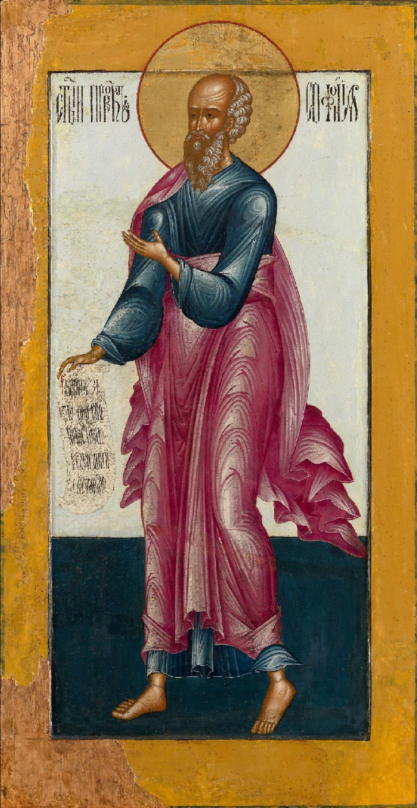

Zephaniah 3 — The Mister Translation

Zephaniah 3. This is the prophet himself, not a scene from the chapter: an iconostasis had a row of prophets, each holding a scroll with a line of his book. The scroll here carries Church Slavonic writing that this note does not claim to read; the pose, the colors and the inscription are the icon painter’s, and the song of verse 17 is not in the picture.
.jpg){kind=link}
Translator's Notes — verse by verse
⚠ Two words in verse 1. “Woe to the rebellious”, hoy mor’ah, stands in this one verse; the word is mor’ah, rebellious (marah), and the KJV has “filthy” where the ASV has “rebellious”. And “the city, the oppressing one”, ha-ir ha-yonah, stands in this one verse: ha-yonah is spelled as “the dove” (the dove Noah sent out is the same letters, Genesis 8:8, now on these pages) and is read as “the oppressing” (yanah). The KJV has “Woe to her that is filthy and polluted, to the oppressing city!”, the ASV “Woe to her that is rebellious and polluted! to the oppressing city!”, the NIV “Woe to the city of oppressors, rebellious and defiled!”, the NWT 1984 “Woe to her that is rebelling and polluting herself, the oppressive city!”, the Douay “Woe to the provoking, and redeemed city, the dove.” and the TLB “Woe to filthy, sinful Jerusalem, city of violence and crime.” The city is not named in the Hebrew of verses 1–7.
⭐ Four things she did not do. “She did not listen to the voice” stands in this one verse, “she did not take correction” stands in this one verse (musar), “she did not trust in Jehovah” stands in this one verse, and the fourth is “she did not draw near to her God”; every clause begins with lo. The KJV has “She obeyed not the voice; she received not correction; she trusted not in the Lord; she drew not near to her God”, the NIV “She obeys no one, she accepts no correction” and “she does not draw near to her God”, the NWT 1984 “She did not listen to a voice; she did not accept discipline” and the Douay “neither hath she received discipline”. In verse 7 the same words come back as a hope, “you will take correction”, which stands in this one verse.
⭐ Lions, wolves. “Roaring lions” stands in this one verse, and “evening wolves” stands in two verses, here and Habakkuk 1:8 (now on these pages), where the horses of the Chaldeans are faster than they. The wolves are judges and the lions are princes, and they are in her midst, beqirbah; “they do not gnaw” stands in this one verse, the verb of gnawing bones (zeev erev), and they leave nothing till the morning. The KJV has “her judges are evening wolves; they gnaw not the bones till the morrow”, the ASV “they leave nothing till the morrow”, the NIV “who leave nothing for the morning”, the NWT 1984 “evening wolves that did not gnaw [bones] till the morning”, the Douay “they left nothing for the morning” and the TLB “ravenous wolves at evening time, who by dawn have left no trace of their prey”.
⭐ Prophets and priests. “They have done violence to the law” stands in two verses, here and Ezekiel 22:26 (now on these pages), of the priests; the verb is chamas. The prophets are pochazim, reckless or frothy (pochaz), anshei bogedot, “men of treacheries”. The KJV has “Her prophets are light and treacherous persons: her priests have polluted the sanctuary, they have done violence to the law”, the ASV “her priests have profaned the sanctuary”, the NIV “Her prophets are unprincipled”, the NWT 1984 “Her prophets were insolent, were men of treachery”, the Douay “Her prophets are senseless men without faith”, the Geneva “they have wrested the Law” and the TLB “are liars seeking their own gain”.
⭐ In her midst. The word qerev runs through the chapter: the princes and judges are beqirbah, “in her midst”, at verse 3, and now “Jehovah is righteous in the midst of her” stands in this one verse. It comes back at verses 11, 12, 15 and 17, six verses in all. He “does no injustice” (avel), the denial of Deuteronomy 32:4 (now on these pages). The KJV has “The just Lord is in the midst thereof; he will not do iniquity”, the ASV “Jehovah in the midst of her is righteous”, the NIV “The Lord within her is righteous; he does no wrong”, the NWT 1984 “Jehovah was righteous in the midst of her; he would do no unrighteousness” and the TLB “But the Lord is there within the city, and he does no wrong”.
⭐ Morning by morning. “Morning by morning” stands in thirteen verses, among them Exodus 16:21, where the manna is gathered (now on these pages); here the thing given each morning is his judgment, mishpato, to the light, “it does not fail”, which stands in five verses, among them Isaiah 40:26, where not one of the stars is missing (now on these pages). The wolves leave nothing laboqer, “until the morning”, in verse 3; Jehovah gives his judgment baboqer baboqer. And “the unjust one knows no shame”, with its first words, stands in this one verse; boshet is the noun of the shame that returns at verses 11 and 19 (bosh). The KJV has “every morning doth he bring his judgment to light, he faileth not; but the unjust knoweth no shame”, the NIV “Morning by morning he dispenses his justice, and every new day he does not fail”, the NWT 1984 “Morning by morning he kept giving his own judicial decision”, the Douay “in the morning, in the morning he will bring his judgment to light” and the TLB “Day by day his justice is more evident”.
⭐ They rose early. Verse 6 is Jehovah’s own account, “I have cut off nations”, which stands in this one verse, with their pinnot, “corner towers”, as in Zephaniah 1:16 (now on these pages); the lines of emptiness, mibli over, mibli ish, me’ein yoshev, are three. Then verse 7: “I said, Surely you will fear me” stands in this one verse, and the answer is hishkimu hishchitu, “they rose early, they corrupted”: the one who gives judgment each morning is answered by a city that rises early for the other thing. The KJV has “but they rose early, and corrupted all their doings”, the NIV “But they were still eager to act corruptly in all they did”, the NWT 1984 “Truly they acted promptly in making all their dealings ruinous”, the Douay “but they rose early and corrupted all their thoughts” and the TLB “they continue all their evil ways from dawn to dusk and dusk to dawn”.
⚠ “To the prey”. “Wait for me” stands in this one verse, and “for the day I rise up” ends in a word that can be read ad, “prey”, or ed, “witness”. The KJV has “until the day that I rise up to the prey”, the ASV “until the day that I rise up to the prey”, the Geneva “until the day that I rise up to the prey”, the NIV “for the day I will stand up to testify”, the NWT 1984 “till the day of my rising up to [the] booty”, the Douay “in the day of my resurrection that is to come” and the TLB “when I will stand up and accuse these evil nations”. And “will be consumed, all the earth” stands in two verses, this one and Zephaniah 1:18 (now on these pages), the line with which the first chapter ended.
⭐ A pure lip. “A pure lip” stands in this one verse (saphah): the word is the one of Babel, where “one lip” stands in two verses, Genesis 11:1 and 11:6 (now on these pages). The peoples are given one lip again, to “call, all of them, on the name of Jehovah”, which stands in this one verse, and to serve him “with one shoulder”, shekhem echad, which stands in two verses, here and Genesis 48:22, where it is a portion (now on these pages; shekhem). The KJV has “a pure language” and “to serve him with one consent”, the NIV “I will purify the lips of the peoples” and “serve him shoulder to shoulder”, the NWT 1984 “the change to a pure language” and “serve him shoulder to shoulder”, the Douay “a chosen lip” and “serve him with one shoulder” and the TLB “I will change the speech of my returning people to pure Hebrew”.
⚠ Beyond the rivers of Cush. “From beyond the rivers of Cush” stands in two verses, here and Isaiah 18:1. “The daughter of my dispersed” stands in this one verse, and it can be read as the same people as the suppliants, scattered Israelites, or as a second group. The KJV has “my suppliants, even the daughter of my dispersed, shall bring mine offering”, the NIV “my worshipers, my scattered people, will bring me offerings”, the NWT 1984 “the ones entreating me, [namely,] the daughter of my scattered ones, will bring a gift to me”, the Geneva “the daughter of my dispersed, praying unto me, shall bring me an offering”, the Douay “my suppliants the children of my dispersed people bring me an offering” and the TLB “My scattered people who live in the Sudan, beyond the rivers of Ethiopia”.
⭐ Not ashamed, and no more haughty. “Your proudly exulting ones” stands in this one verse; alizei is the root of exulting that the chapter turns around in verse 14 (alaz), where the daughter is told to exult with the whole heart. In that day she is not ashamed, lo tevoshi, the verb of the noun boshet of verse 5. The KJV has “them that rejoice in thy pride”, the ASV “thy proudly exulting ones”, the NIV “your arrogant boasters”, the NWT 1984 “your haughtily exultant ones”, the Douay “thy proud boasters” and the TLB “all your proud and arrogant people”.
⭐ An afflicted and poor people. “Afflicted and poor” stands in this one verse (oni), and “and they will take refuge in the name of Jehovah” stands in this one verse. The ASV has “an afflicted and poor people, and they shall take refuge in the name of Jehovah”, the KJV “an afflicted and poor people, and they shall trust in the name of the Lord”, the NIV “the meek and humble”, the NWT 1984 “a people humble and lowly”, the Douay “a poor and needy people” and the TLB “the poor and the humble”.
⭐ The remnant of Israel. “The remnant of Israel” stands in seven verses, among them Micah 2:12 and here; the verbs are “they will pasture and lie down”, which stands in this one verse, the pair of a flock (Psalm 23:2, now on these pages), and “and there is none to make them afraid” stands in twelve verses, the first being Leviticus 26:6 (now on these pages). The KJV has “The remnant of Israel shall not do iniquity, nor speak lies” and “for they shall feed and lie down, and none shall make them afraid”, the NIV “They will eat and lie down”, the NWT 1984 “they themselves will feed and actually lie stretched out”, the Douay “for they shall feed, and shall lie down, and there shall be none to make them afraid” and the TLB “They will live quietly, in peace, and lie down in safety”.
⭐ Four commands. “Sing, daughter of Zion” stands in this one verse, “shout, Israel” stands in this one verse, and the other two are “be glad” and “exult”, simchi (simchah) and ve’ilzi, with “all the heart”. Isaiah 54:1 opens with the same first word, “Sing, barren one” (now on these pages). The KJV has “Sing, O daughter of Zion; shout, O Israel; be glad and rejoice with all the heart”, the Geneva “Rejoice, O daughter Zion: be ye joyful, O Israel”, the Douay “Give praise, O daughter of Sion” and the NWT 1984 “Rejoice and exult with all the heart”.
⭐ The King of Israel is in the midst of you. “The King of Israel, Jehovah, is in the midst of you” stands in this one verse, and the KJV has “The Lord hath taken away thy judgments, he hath cast out thine enemy: the king of Israel, even the Lord, is in the midst of thee”. What he takes away is mishpatayikh, “your judgments”: the NIV has “The Lord has taken away your punishment”, the NWT 1984 “Jehovah has removed the judgments upon you”, the Douay “The Lord hath taken away thy judgment” and the TLB “the Lord will remove his hand of judgment”. And “do not fear”, addressed to a woman, stands in eleven verses, among them Genesis 21:17, to Hagar, and 35:17, to Rachel (now on these pages, now on these pages), and Isaiah 54:4 (now on these pages); “let not your hands be slack”, which stands in two verses, here and 2 Chronicles 15:7. The KJV has “Let not thine hands be slack”, the NIV “do not let your hands hang limp”, the NWT 1984 “May your hands not drop down” and the Douay “Let not thy hands be weakened”.
⭐ Jehovah your God is in the midst of you. “Jehovah your God is in the midst of you” stands in three verses: Deuteronomy 7:21, where he is a great and awesome God (now on these pages), Deuteronomy 6:15 and here. “A mighty one who saves” stands in this one verse (gibbor), and then three verbs: “he will rejoice over you” stands in two verses, here and Isaiah 62:5, of the bridegroom over the bride (yet to come in this translation; sus), with besimchah, “with joy”; “he will be silent in his love” stands in this one verse (charash); and “he will exult over you with singing” stands in this one verse, with rinnah (rinnah). Her verb in verse 14 is the root of his noun: she sings, roni, and he sings over her, berinnah; she is glad, simchi, and he is glad over her, besimchah.
⚠ “He will be silent in his love.” The middle verb is the one the shelf cannot agree on. The KJV has “he will rest in his love”, the ASV “he will rest in his love”, the Geneva “he will quiet himself in his love”, the Douay “he will be silent in his love”, the NWT 1984 “He will become silent in his love”, the NIV “in his love he will no longer rebuke you” and the TLB “he will love you and not accuse you” with “Is that a joyous choir I hear? No, it is the Lord himself exulting over you in happy song”. The Hebrew is yacharish, “he will be silent”, with no “rest”, no “rebuke” and no “accuse”; and the last of the three verbs is a song. This translation prints “silent” and leaves it, a God who is quiet in his love and sings over you in the same verse.
⚠ The hardest line. “Those grieved far from the appointed feast” stands in this one verse (nuge), and “a burden upon her, reproach” stands in this one verse; the address changes from “you”, mimmekh, to “her”, aleha, within the line. The shelf is split: the KJV has “I will gather them that are sorrowful for the solemn assembly, who are of thee, to whom the reproach of it was a burden”, the ASV “I will gather them that sorrow for the solemn assembly”, the NIV “I will remove from you all who mourn over the loss of your appointed festivals, which is a burden and reproach for you”, the NWT 1984 “The ones grief-stricken in absence from [your] festal season I shall certainly gather together”, the Geneva “After a certain time will I gather the afflicted that were of thee” and the Douay “The triflers that were departed from the law, I will gather together”. The KJV folds the feast into the grief; the Douay has the people who left the law, where the Hebrew has moed, the appointed time (moed).
⭐ The lame, and the driven away. “The lame”, ha-tsole’ah, stands in three verses, Micah 4:6 and 4:7 and here (tsole’ah), and “and the driven away” stands in two verses, Micah 4:6 and here (nadach); Jacob left Peniel limping (Genesis 32:32, now on these pages). The shame of verses 5 and 11 returns: they will be set for praise where their shame was. The KJV has “I will save her that halteth, and gather her that was driven out”, the ASV “I will save that which is lame, and gather that which was driven away”, the NIV “I will rescue the lame; I will gather the exiles”, the NWT 1984 “I will save her that is limping”, the Douay “I will save her that halteth, and will gather her that was cast out” and the TLB “I will save the weak and helpless ones”.
⭐ A name and a praise. “for praise and for a name” stands in two verses, Deuteronomy 26:19 (now on these pages) and verse 19, and in the reverse order “for a name and for praise” stands in two verses, Jeremiah 13:11 and verse 20 (tehillah). The last words of the chapter are Jehovah’s: “when I turn back your captivity” stands in this one verse (shevut), the idiom of Deuteronomy 30:3 and Job 42:10 (now on these pages), “before your eyes”, and amar Yehovah, “says Jehovah”. The KJV has “I will make you a name and a praise among all people of the earth, when I turn back your captivity before your eyes, saith the Lord”, the NIV “when I restore your fortunes before your very eyes”, the NWT 1984 “when I gather back YOUR captive ones before YOUR eyes”, the Douay “when I shall have brought back your captivity before your eyes” and the TLB “when I restore your fortunes before your very eyes”.
Patterns worth carrying forward
Where this translation keeps the words exact and distinct: “correction” for musar at verses 2 and 7; “in the midst of” for qerev, six times, at verses 3, 5, 11, 12, 15 and 17; “morning” for boqer at verses 3 and 5; “shame” for bosh at verses 5, 11 and 19; “a pure lip” for safah berurah; “exult” for the root of alaz at verses 11 and 14; “singing” for rinnah and “sing” for roni; “silent” for yacharish; “a name and a praise” in both orders; “captivity” for shevut; “Jehovah” for the Name, written nine times in this chapter: verses 2, 5, 8, 9, 12, 15 (twice), 17 and 20.
Echoes paid. Genesis 8:8, 11:1, 21:17, 32:32, 35:17 and 48:22; Exodus 16:21; Leviticus 26:6; Deuteronomy 7:21, 26:19, 30:3 and 32:4; Habakkuk 1:8; Zephaniah 1:16 and 1:18; Isaiah 40:26, 54:1 and 54:4; Psalm 23:2; Job 42:10.
Echoes planted. Jeremiah 13:11; Micah 2:12, 4:6 and 4:7; Isaiah 18:1 and 62:5; 2 Chronicles 15:7; Deuteronomy 6:15. None of these is translated here yet. Ezekiel 22:26 is now on these pages.
⚠ A note on order: Zephaniah stands on these pages at chapters 1 and 3, chosen by how often a passage is read rather than in sequence. The sequential thread is unchanged: next in sequence is Zephaniah 2.